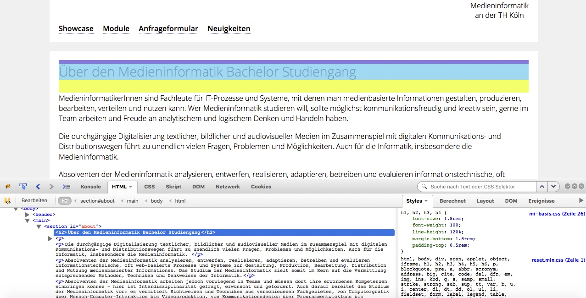
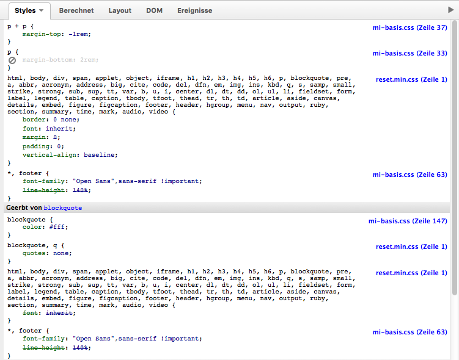
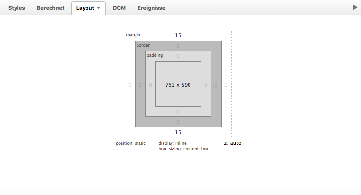

Debugging
im Web
Entwicklerwerkzeuge
... und was mit ihnen möglich ist
Browser
| http://www.getfirebug.org → den Anweisungen folgen | |
| Anzeigen → Entwickler → Entwicklertools | |
| Einstellungen → Erweitert → ✓ Entwickler Menü anzeigen | |
| Darstellung → Entwickler-Menü zeigen | |

|
Strg + 1-7 |
HTML anpassen
Inspizierung des DOM's
HTML Validierung
- Überprüfung, ob Webseiten aktuellen Standards entsprechen
- Suchmaschinenoptimierung
- Barrierefreiheit
- garantierte Darstellung
Aufgabe 1
Validieren Sie den MI Onepager mittels W3C Validierungsservice und korrigieren Sie vorhandene Fehler (Warnings können ignoriert werden).
Zeit: 15-20 Minuten
CSS anpassen
Die Styles
Das Layout
Aufgabe 2
Besuchen Sie eine beliebige Internetseite und verändern Sie diese mittels Entwicklertool.
Zeit: 15 Minuten
Javascript Debugging
Debugging früher
var x=4, y=3;
y = x*y+y;
alert(y);
y = y*Math.random();
alert(y);
Console API
console.log()
a = 2;
console.log(a);
b = 3;
console.log(b);
c = a*a + b*b;
console.log(c);
Parameter
- eine Variable oder Zeichenkette
- eine kommagetrennte Liste aus Variablen oder Zeichenketten
String Substitution
var name = prompt('Bitte geben Sie Ihren Namen ein!', '');
for (var i=0; i<9; i++) {
console.log("Hallo, %s. Das ist der %d. Schleifendurchlauf.", name, i+1);
}
| %o | fügt einem JavaScript Objekt einen Link hinzu. Anklicken öffnet einen Inspektor. |
| %d oder %i | gibt eine Ganzzahl heraus (keine Formatierung möglich) |
| %s | gibt eine Zeichenkette heraus | %f | gibt einen Fließkommawert (Dezimalzahl) heraus |
console.error()
a = 2;
console.log(a);
b = 3;
console.log(b);
c = a*a + b*b;
console.log(c);
window.alert(ergebnis);
Breakpoints
der debugger Befehl
var x = 12 * 6;
debugger;
document.getElementbyId("demo").value = x;
Aufgabe 3
Suchen und beheben Sie alle Javascript-Fehler im Mi-Onepager. Benutzen zum Finden der Fehler die Konsole des Entwicklertools.
Zeit: 30 Minuten